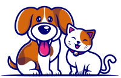

Site desenvolvido para fins de estudo. Todos os Animais estão disponiveis para adoção atraves da Suipa(RJ)
Adote um focinho carente!
Adote aqui!
- Home
- Sobre
- Contato

Zilminha
Fêmea - Idoso
Pequeno porte

Zico
Fêmea - Filhote
Pequeno porte

Zeca
Macho - Adolescente
Médio porte

Yoda
Macho - Filhote
Médio porte

Xuxa
Fêmea - Adulto
Médio porte

Via
Fêmea - Adulto
Médio porte

Tutti Frutti
Fêmea - Adulto
Médio porte

Tom
Macho - Adolescente
Médio porte

TOBIAS
Macho - Adolescente
Pequeno porte